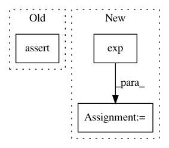

178553d4d4edfdc155d876c5ac75aaa1105445ee,src/spn/structure/leaves/conditional/utils.py,,get_scipy_obj_params,#Any#Any#,11
Before Change
elif isinstance(node, Conditional_Poisson):
// assert len(node.mean) == obs.shape[0]
mu = node.inv_linkfunc(np.dot(obs, node.weights))
assert len(mu) == obs.shape[0]
return poisson, {"mu": mu}
elif isinstance(node, Conditional_Bernoulli):
// assert len(node.p) == obs.shape[0]
After Change
return norm, {"loc": mean, "scale": np.ones(obs.shape[0])}
elif isinstance(node, Conditional_Poisson):
mu = np.exp(pred)
return poisson, {"mu": mu}
elif isinstance(node, Conditional_Bernoulli):
p = logit(pred)
In pattern: SUPERPATTERN
Frequency: 5
Non-data size: 3
Instances
Project Name: SPFlow/SPFlow
Commit Name: 178553d4d4edfdc155d876c5ac75aaa1105445ee
Time: 2018-08-15
Author: molina@cs.tu-darmstadt.de
File Name: src/spn/structure/leaves/conditional/utils.py
Class Name:
Method Name: get_scipy_obj_params
Project Name: SPFlow/SPFlow
Commit Name: c52045a02486d7c3793b1083f5b281a1e5fdb4fb
Time: 2018-09-11
Author: molina@cs.tu-darmstadt.de
File Name: src/spn/structure/leaves/conditional/utils.py
Class Name:
Method Name: get_scipy_obj_params
Project Name: allenai/allennlp
Commit Name: a70849dc8e0ade58f6580110f9032e2adea42b4d
Time: 2017-09-30
Author: joelgrus@gmail.com
File Name: tests/service/predictors/decomposable_attention_test.py
Class Name: TestDecomposableAttentionPredictor
Method Name: test_uses_named_inputs
Project Name: pymanopt/pymanopt
Commit Name: 68f33e7d12612fc4f1aaa11c178a8aafb7466cc6
Time: 2016-02-19
Author: jamiehntownsend@gmail.com
File Name: tests/test_manifold_oblique.py
Class Name: TestObliqueManifold
Method Name: test_exp_log_inverse
Project Name: pymanopt/pymanopt
Commit Name: 68f33e7d12612fc4f1aaa11c178a8aafb7466cc6
Time: 2016-02-19
Author: jamiehntownsend@gmail.com
File Name: tests/test_manifold_grassmann.py
Class Name: TestGrassmannManifold
Method Name: test_log_exp_inverse